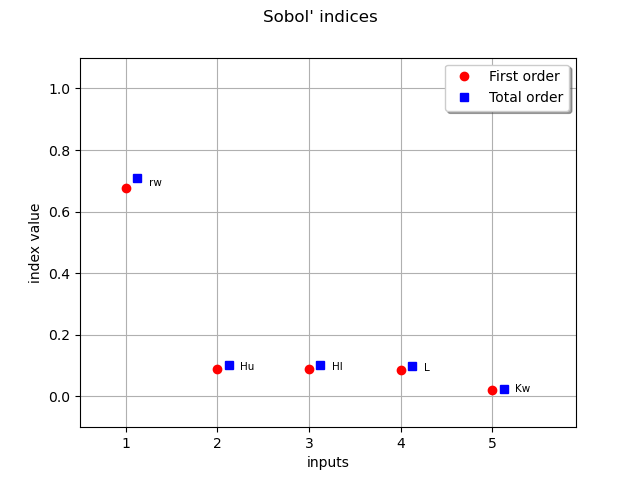

Note
Go to the end to download the full example code
Sobol’ sensitivity indices from chaos¶
In this example we are going to compute global sensitivity indices from a functional chaos decomposition.
We study the Borehole function that models water flow through a borehole:
![\frac{2 \pi T_u (H_u - H_l)}{\ln{r/r_w}(1+\frac{2 L T_u}{\ln(r/r_w) r^2_w K_w}\frac{T_u}{T_l})}]()
With parameters:
 : radius of borehole (m)
: radius of borehole (m) : radius of influence (m)
: radius of influence (m) : transmissivity of upper aquifer (
: transmissivity of upper aquifer ( )
) : potentiometric head of upper aquifer (m)
: potentiometric head of upper aquifer (m) : transmissivity of lower aquifer ()
: transmissivity of lower aquifer () : potentiometric head of lower aquifer (m)
: potentiometric head of lower aquifer (m) : length of borehole (m)
: length of borehole (m) : hydraulic conductivity of borehole (
: hydraulic conductivity of borehole ( )
)
import openturns as ot
from operator import itemgetter
import openturns.viewer as viewer
from matplotlib import pylab as plt
ot.Log.Show(ot.Log.NONE)
borehole model
dimension = 8
input_names = ["rw", "r", "Tu", "Hu", "Tl", "Hl", "L", "Kw"]
model = ot.SymbolicFunction(
input_names, ["(2*pi_*Tu*(Hu-Hl))/(ln(r/rw)*(1+(2*L*Tu)/(ln(r/rw)*rw^2*Kw)+Tu/Tl))"]
)
coll = [
ot.Normal(0.1, 0.0161812),
ot.LogNormal(7.71, 1.0056),
ot.Uniform(63070.0, 115600.0),
ot.Uniform(990.0, 1110.0),
ot.Uniform(63.1, 116.0),
ot.Uniform(700.0, 820.0),
ot.Uniform(1120.0, 1680.0),
ot.Uniform(9855.0, 12045.0),
]
distribution = ot.ComposedDistribution(coll)
distribution.setDescription(input_names)
Freeze r, Tu, Tl from model to go faster
selection = [1, 2, 4]
complement = ot.Indices(selection).complement(dimension)
distribution = distribution.getMarginal(complement)
model = ot.ParametricFunction(
model, selection, distribution.getMarginal(selection).getMean()
)
input_names_copy = list(input_names)
input_names = itemgetter(*complement)(input_names)
dimension = len(complement)
design of experiment
size = 1000
X = distribution.getSample(size)
Y = model(X)
create a functional chaos model
algo = ot.FunctionalChaosAlgorithm(X, Y)
algo.run()
result = algo.getResult()
print(result.getResiduals())
print(result.getRelativeErrors())
[0.00195286]
[4.64697e-06]
Quick summary of sensitivity analysis
sensitivityAnalysis = ot.FunctionalChaosSobolIndices(result)
print(sensitivityAnalysis)
FunctionalChaosSobolIndices
- input dimension=5
- output dimension=1
- basis size=181
- mean=[76.0794]
- std-dev=[30.2678]
| Index | Multi-index | Variance part |
|-------|---------------|---------------|
| 1 | [1,0,0,0,0] | 0.662606 |
| 3 | [0,0,1,0,0] | 0.0902125 |
| 2 | [0,1,0,0,0] | 0.0901124 |
| 4 | [0,0,0,1,0] | 0.0861668 |
| 5 | [0,0,0,0,1] | 0.0209417 |
| Input | Name | Sobol' index | Total index |
|-------|---------------|---------------|---------------|
| 0 | rw | 0.677582 | 0.70826 |
| 1 | Hu | 0.0901124 | 0.101381 |
| 2 | Hl | 0.0902126 | 0.101371 |
| 3 | L | 0.0871206 | 0.0992782 |
| 4 | Kw | 0.0209417 | 0.0240504 |
draw Sobol’ indices
first_order = [sensitivityAnalysis.getSobolIndex(i) for i in range(dimension)]
total_order = [sensitivityAnalysis.getSobolTotalIndex(i) for i in range(dimension)]
graph = ot.SobolIndicesAlgorithm.DrawSobolIndices(input_names, first_order, total_order)
view = viewer.View(graph)

We saw that total order indices are close to first order, so the higher order indices must be all quite close to 0
for i in range(dimension):
for j in range(i):
print(
input_names[i] + " & " + input_names[j],
":",
sensitivityAnalysis.getSobolIndex([i, j]),
)
plt.show()
Hu & rw : 0.009603147153069586
Hl & rw : 0.009486332516243895
Hl & Hu : 6.772494613216887e-08
L & rw : 0.009152262191425037
L & Hu : 0.0012275743968190782
L & Hl : 0.001230665255687928
Kw & rw : 0.0021338960376998777
Kw & Hu : 0.0002952362243352463
Kw & Hl : 0.0002981593839990994
Kw & L : 0.0002935613713562576